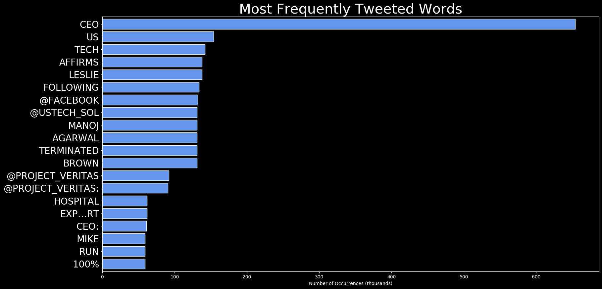
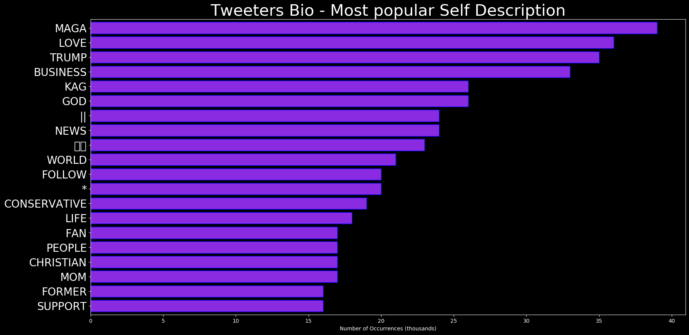
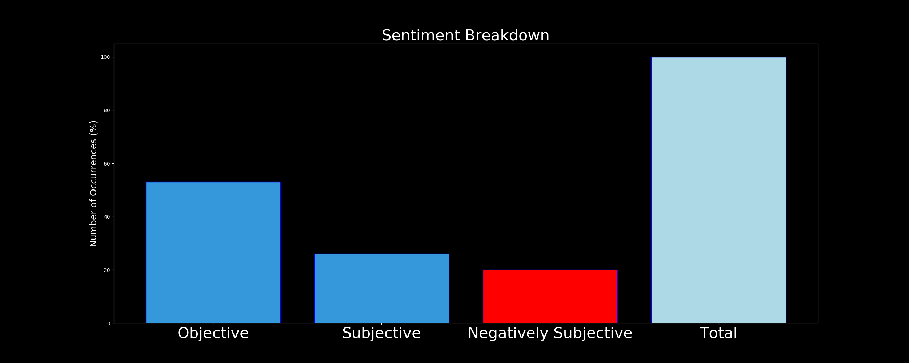

🌍 🌎 Dark Wire 🐱💻

“Hahahahahahahaha How The Fuck Is Cyber Bullying Real Hahahaha Nigga Just Walk Away From The Screen Like Nigga Close Your Eyes Haha.”
The most popular user is: tylerthecreator
🇬🇧 Welcome!



"RT @HunterJCullen: Ahead of the tax return rulings, prepare for an uptick of cyber-attacks from the mob and a major increase of wagging the…" |
"Thomas Wingfield, Cyber Expert, Discusses Implications of Cybersecurity Within DoD, National Security - ExecutiveBiz https://t.co/croqqjQ2SB" |
"RT @HeidyKhlaaf: New Nature study shows that 2/3 of those asymptomatic with Covid-19 had ground-glass opacity abnormalities (lung damage) i…" |
RELATED METRICS
#1 Most tweeted to |
Project_Veritas |
#2 Most tweeted to |
|
#3 Most tweeted to |
|
NewProfiles (less than 10 days) |
1.7% |
Tweeters with < 10 followers |
3.7% |
Tweeters with > 1000000 followers |
0.4% |
MOST POPULAR TWEET TERMS
First |
CEO |
Second |
US |
Third |
TECH |
Fourth |
AFFIRMS |
Fifth |
|
Summary
Blah blah
Adam McMurchie 15/Feb/2020
More articles from me, or tech tutorials.